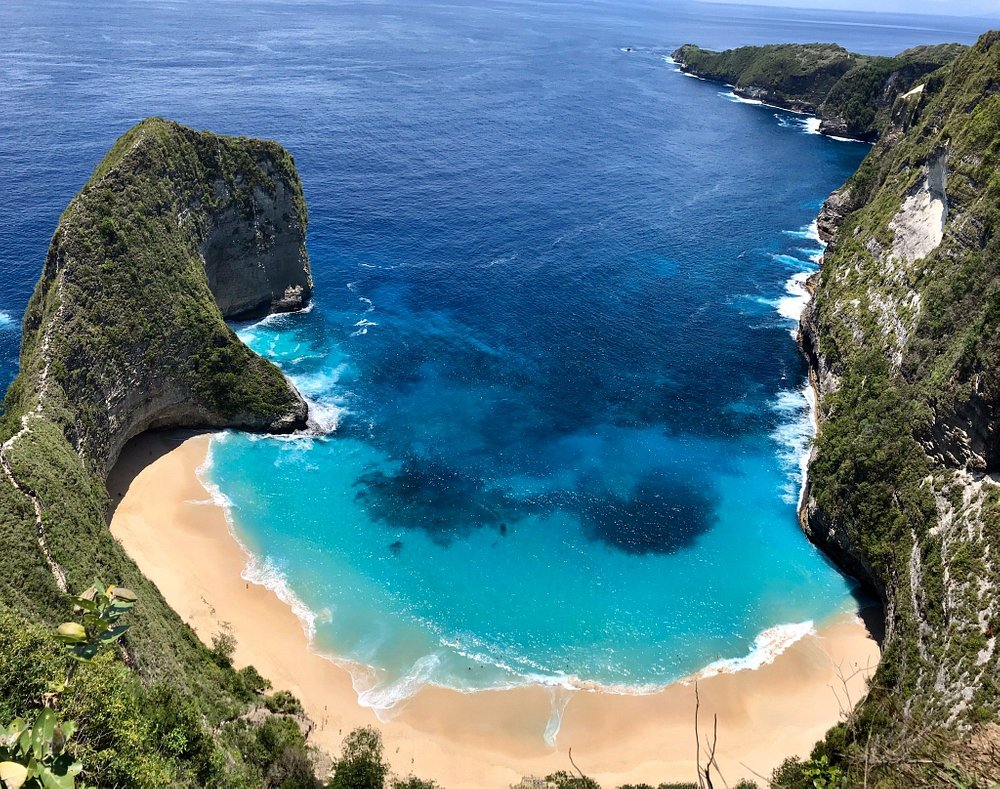

Pura Ulun Danu Beratan adalah salah satu pura utama di Bali, terletak anggun di tepi Danau Beratan, Bedugul, yang berfungsi sebagai tempat pemujaan Dewi Danu, dewi air dan kesuburan, vital bagi sistem irigasi subak. Ikon utama pura ini adalah Pura Meru yang tampak seolah mengapung di permukaan danau, menciptakan pemandangan yang magis, sejuk, dan sangat fotogenik, menjadikannya salah satu tujuan wisata budaya dan alam yang wajib dikunjungi di dataran tinggi Bali.
Waktu Operasional
Pura Ulun Danu Beratan terbuka untuk kunjungan setiap hari, termasuk akhir pekan dan hari libur nasional.
Jam Buka Reguler: 07.00 - 19.00 WITA.
Waktu terbaik untuk datang adalah saat pagi hari (sekitar pukul 07.00 - 09.00) ketika suasana masih sepi dan Anda bisa menikmati pemandangan pura yang diselimuti kabut tipis dan udara yang sangat sejuk.
Harga Tiket Masuk
Pengunjung wajib membeli tiket di loket yang tersedia di pintu masuk utama. Harga tiket (dapat berubah sewaktu-waktu):
- Wisatawan Domestik (Lokal): Rp 30.000 per orang.
- Wisatawan Mancanegara (Asing): Rp 75.000 per orang.
- Biaya Parkir: Kendaraan roda empat (mobil) Rp 5.000, kendaraan roda dua (motor) Rp 3.000.
Aktivitas Utama
Selain mengagumi keindahan arsitektur pura, Anda dapat menikmati:
- Menyewa Perahu: Tersedia perahu di Danau Beratan. Ini memberikan kesempatan unik untuk mendekat dan mengambil foto Pura Meru dari sudut pandang air.
- Fotografi: Manfaatkan spot indah di area taman yang terawat.
- Pasar Candi Kuning: Pasar buah-buahan lokal yang terkenal terletak sangat dekat dan wajib dikunjungi setelah keluar dari area pura.
Fasilitas dan Layanan
Fasilitas yang tersedia untuk kenyamanan pengunjung meliputi:
- Area Makan: Terdapat beberapa kafe dan warung yang menjual makanan dan minuman hangat.
- Fasilitas Dasar: Toilet umum yang memadai dan toko-toko suvenir.
- Pusat Informasi: Tersedia petugas dan papan informasi untuk panduan dasar kunjungan.
Peta Ulun Danu

Air Terjun Sekumpul
📌 Bali

Gunung Batur
📌 Bali

Pura Tanah Lot
📌 Bali

Pantai Kelingking
📌 Bali